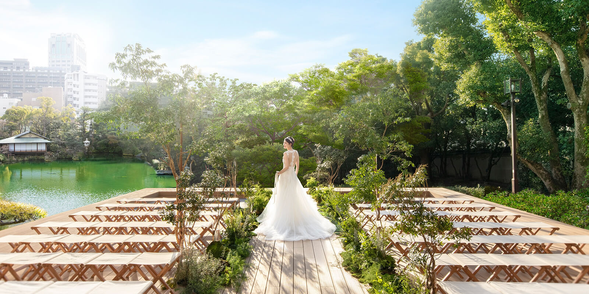
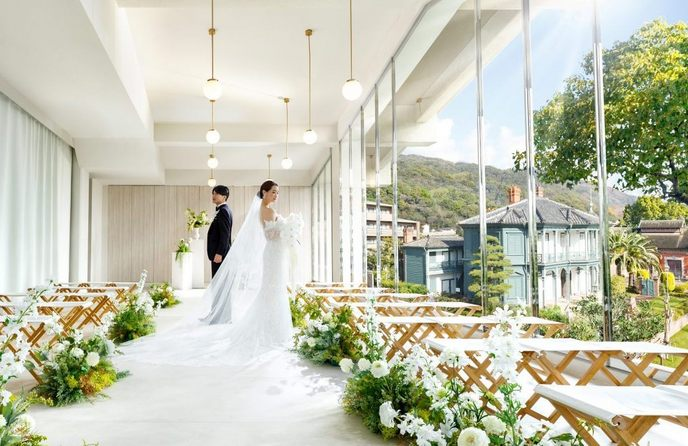

Sorakuen · Kobe
~$25,700 USD wedding day


Sorakuen is a heritage Japanese garden in central Kobe with a restored Western-style mansion at its heart. It is exactly the fusion you described. The architecture is unmistakably Japanese, the gardens give you the nature backdrop you want as the focal point, and the indoor reception space inside the heritage mansion is formal enough for tuxedos and floor-length gowns without feeling stiff.
Cherry blossoms in Kobe peak in early April, in the same window as Kyoto. The Sorakuen garden itself has cherry trees throughout. Catering is French cuisine with Japanese technique, prepared by an in-house team that has been doing this for decades. Kobe sits under an hour from Kyoto by Shinkansen, which is what makes the multi-city flow of the family week work as well as it does.